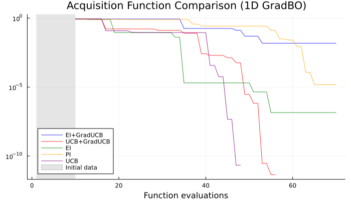

AbstractBayesOpt Tutorial: Acquisition Functions Comparison with gradient-enhanced GPs
Setup
Loading the necessary packages.
using AbstractBayesOpt
using AbstractGPs
using Plots
using ForwardDiff
using QuasiMonteCarlo
using RandomDefine the objective function
We will compare different acquisition functions on a 1D function with multiple local minima: $f(x) = \sin(x + 1) + \sin(\frac{10}{3}(x + 1))$
f(x) = sin(x + 1) + sin((10.0 / 3.0) * (x + 1))
∂f(x) = ForwardDiff.derivative(f, x)
f_∂f(x) = [f(x); ∂f(x)];
d = 1
lower = [-10.0]
upper = [10.0]
domain = ContinuousDomain(lower, upper)Initial Training Data
We will use a gradient-enhanced Gaussian Process (GradientGP) with a Matérn 5/2 kernel. We add a small noise variance for numerical stability.
σ² = 1e-12;Generate initial training data using Sobol sampling for better space coverage
n_train = 5
x_train = vec(QuasiMonteCarlo.sample(n_train, lower, upper, SobolSample()))
y_train = f_∂f.(x_train)5-element Vector{Vector{Float64}}:
[-0.03857071194091599, 1.016277819878457]
[0.7395218845192136, -3.929545360024944]
[-1.1339260739262087, 1.1363494685934712]
[-0.5339377612900902, -2.1827991422845128]
[1.8345604988947497, 1.2435520212800384]Setup the gradient-enhanced GP model, using in-house ApproxMatern52Kernel for AD compatibility.
model = GradientGP(ApproxMatern52Kernel(), d+1, σ²)GradientGP{Float64}(AbstractGPs.GP{AbstractGPs.CustomMean{AbstractBayesOpt.var"#5#7"{Vector{Float64}, AbstractBayesOpt.var"#f_mean#6"}}, gradKernel{KernelFunctions.ScaledKernel{KernelFunctions.TransformedKernel{ApproxMatern52Kernel{Distances.SqEuclidean}, KernelFunctions.ScaleTransform{Float64}}, Float64}}}(AbstractGPs.CustomMean{AbstractBayesOpt.var"#5#7"{Vector{Float64}, AbstractBayesOpt.var"#f_mean#6"}}(AbstractBayesOpt.var"#5#7"{Vector{Float64}, AbstractBayesOpt.var"#f_mean#6"}([0.0, 0.0], AbstractBayesOpt.var"#f_mean#6"())), gradKernel{KernelFunctions.ScaledKernel{KernelFunctions.TransformedKernel{ApproxMatern52Kernel{Distances.SqEuclidean}, KernelFunctions.ScaleTransform{Float64}}, Float64}}(Matern 5/2 Kernel, quadratic approximation around d=0 (metric = Distances.SqEuclidean(0.0))
- Scale Transform (s = 1.0)
- σ² = 1.0)), 1.0e-12, 2, nothing)Acquisition Functions Setup
We will compare five different acquisition functions:
- Expected Improvement (EI): Balances exploitation and exploration by considering both the magnitude and probability of improvement (see
ExpectedImprovement) - Probability of Improvement (PI): Focuses on the probability of finding a better point (see
ProbabilityImprovement) - Upper Confidence Bound (UCB): Uses lower bound estimates to guide exploration (see
UpperConfidenceBound) - UCB + Gradient UCB Ensemble: Combines standard UCB with gradient norm information (see
GradientNormUCBandEnsembleAcquisition) - EI + Gradient UCB Ensemble: Combines Expected Improvement with gradient norm information (see
GradientNormUCBandEnsembleAcquisition)
We show below the function to setup the acquisition functions, and run the tests. You can skip to the results analysis and visualisation section if you want to see the outcomes directly.
function setup_acquisition_functions(y_train)
best_y = minimum(first.(y_train))
ei_acq = ExpectedImprovement(0.0, best_y)
pi_acq = ProbabilityImprovement(0.0, best_y)
ucb_acq = UpperConfidenceBound(1.96)
ucb_acq_for_ensemble = UpperConfidenceBound(1.96)
grad_ucb_acq = GradientNormUCB(1.5)
ensemble_ucb_grad = EnsembleAcquisition(
[0.9, 0.1], [ucb_acq_for_ensemble, grad_ucb_acq]
)
ei_for_ensemble = ExpectedImprovement(0.0, best_y)
grad_ucb_for_ensemble = GradientNormUCB(1.5)
ensemble_ei_grad = EnsembleAcquisition(
[0.9, 0.1], [ei_for_ensemble, grad_ucb_for_ensemble]
)
return [
("EI", ei_acq),
("PI", pi_acq),
("UCB", ucb_acq),
("UCB+GradUCB", ensemble_ucb_grad),
("EI+GradUCB", ensemble_ei_grad),
]
endsetup_acquisition_functions (generic function with 1 method)Running the Optimisation Comparison
Now we will run Bayesian optimisation with each acquisition function and compare their performance.
function run_comparison(n_iterations=30)
results = Dict{String,Any}()
for (name, acq_func) in setup_acquisition_functions(y_train)
@info "\n=== Running optimisation with $name ==="
problem = BOStruct(
f_∂f,
acq_func,
model,
domain,
x_train,
y_train,
n_iterations,
0.0, # Actual noise level (0.0 for noiseless)
)
result, _, _ = AbstractBayesOpt.optimize(problem);
xs = result.xs
ys = first.(result.ys_non_std)
optimal_point = xs[argmin(ys)]
optimal_value = minimum(ys)
@info "Optimal point: $optimal_point"
@info "Optimal value: $optimal_value"
@info "Error from true minimum: $(abs(optimal_value - min_f))"
running_min = accumulate(min, f.(xs));
results[name] = (
xs=xs,
ys=ys,
running_min=running_min,
optimal_point=optimal_point,
optimal_value=optimal_value,
error=abs(optimal_value - min_f),
)
end
return results
end;Execute the comparison
Let's run the optimisation with each acquisition function for 30 iterations.
results = run_comparison(30)Dict{String, Any} with 5 entries:
"EI+GradUCB" => (xs = [-2.5, 7.5, 2.5, -7.5, -6.25, 2.04432, -5.79765, 6.606…
"UCB+GradUCB" => (xs = [-2.5, 7.5, 2.5, -7.5, -6.25, 1.86995, 8.48369, 3.5904…
"EI" => (xs = [-2.5, 7.5, 2.5, -7.5, -6.25, 2.11366, 2.37234, 8.3527…
"PI" => (xs = [-2.5, 7.5, 2.5, -7.5, -6.25, 2.497, 2.463, 2.447, 2.4…
"UCB" => (xs = [-2.5, 7.5, 2.5, -7.5, -6.25, 1.87185, 8.39524, 3.4259…Results Analysis and Visualisation
We will create a convergence plot showing how each acquisition function performs over time. The plot shows the error relative to the true minimum on a logarithmic scale.
Create and display the convergence plot
This plot shows how quickly each acquisition function converges to the global minimum. The ensemble methods that combine multiple acquisition functions often show improved performance.
This page was generated using Literate.jl.